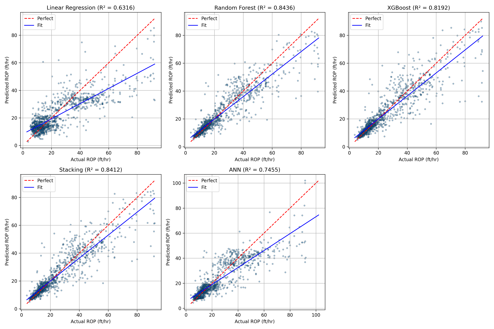

Aspiring Energy Professional | Reservoir Simulation | Drilling Optimization | Python & ML
Hello! I’m Ebenezer Quayson, a final-year petroleum engineering student with a passion for reservoir simulation, drilling optimization, and data-driven solutions in energy. I enjoy applying Python, machine learning, and AI to solve real-world petroleum engineering challenges.
Simulated oil reservoir behavior using Eclipse software and Python, analyzing production rates and recovery strategies.

Developed a Python-based ROP prediction model using machine learning techniques to optimise drilling efficiency.
Visualizing pressure vs time for multiple wells in a reservoir simulation.
You can download my full CV here:
Download CVEmail: quaysonebenezer@gmail.com
LinkedIn: linkedin.com/in/ebenezarquayson131213
GitHub: github.com/username